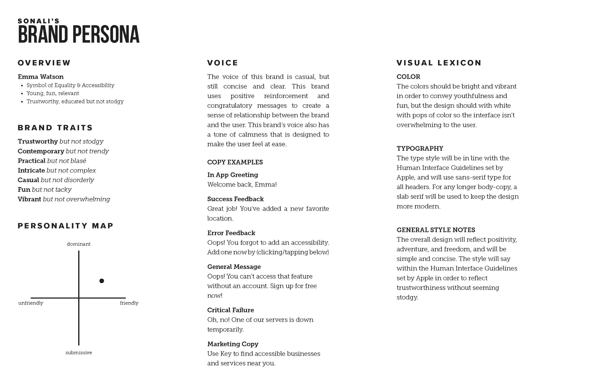
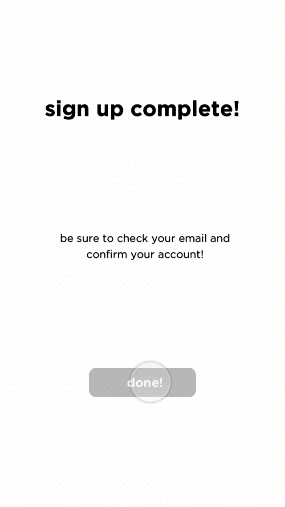
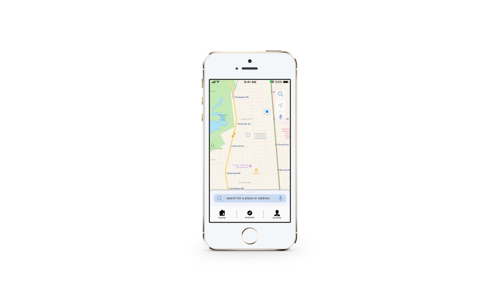
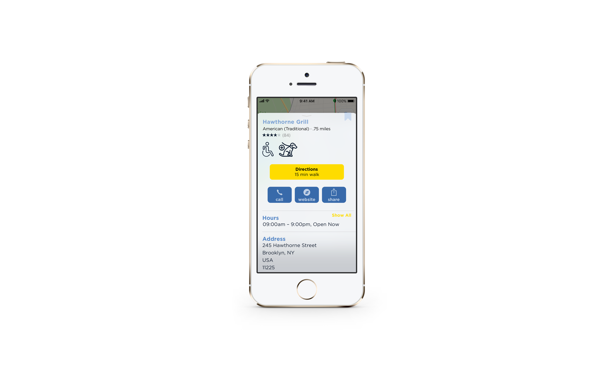

After moving to New York City in April of 2017, it became clear that the city was not built with accessibility in mind. Whether it’s a few stairs leading up to the front door, or tables which are placed far too close together, there are a lot of unknowns for people with restrictions when they decide to go out, and that can dampen a potentially adventurous spirit.
When given the opportunity in Major Studio to design an application of my choosing, I decided I wanted to design something that could help people with permanent, temporary, and situational disabilities discover inclusive businesses and services nearby.
When given the opportunity in Major Studio to design an application of my choosing, I decided I wanted to design something that could help people with permanent, temporary, and situational disabilities discover inclusive businesses and services nearby.
Strategy
Brand Persona

The first thing I did after the brainstorming process was develop a brand persona. Knowing what I wanted the brand to reflect was a critical step to take before I started the wireframe process. While I developed the site maps, I kept this brand persona in the back of my mind.
Site Map I

Site Map II

Design
The wireframe and design process involved creating a short animation from the wireframe designs, as well as creating a hero flow and onboarding



